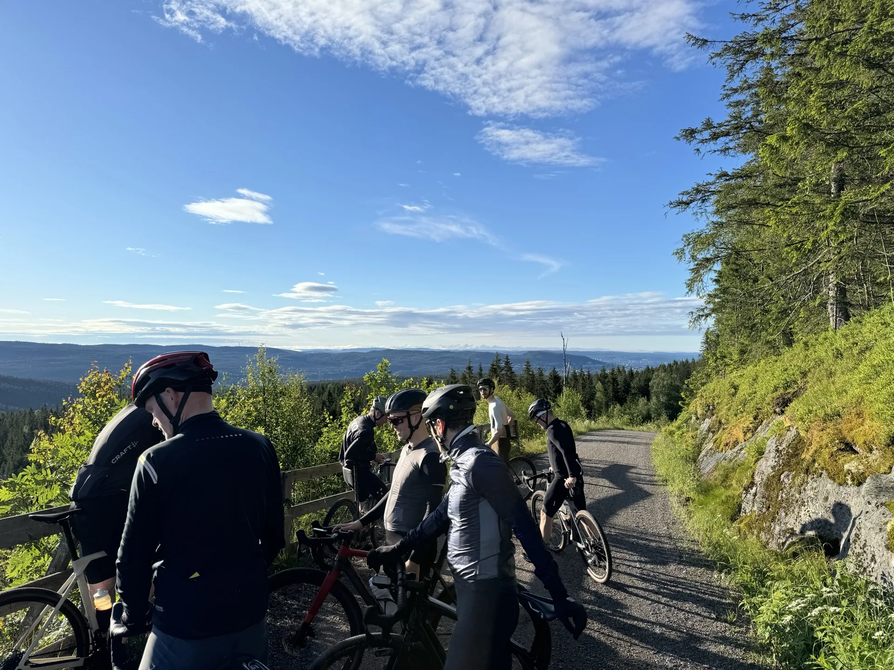

Yes — Oslo is worth visiting, and more so than its quiet reputation suggests. But the visitors who love it aren't the ones ticking off museums; they're the ones who realise Oslo is less a city to be toured than a gateway to Norwegian nature, with forest, fjord and mountains all minutes from downtown.
We live here, so take this with the appropriate bias — but here's the honest version, including what's overrated.
The headline sights earn their reputation. The Opera House you can walk up like a hillside; Vigeland Park and its 200 sculptures; the Bygdøy museums with their Viking ships and polar expeditions; the waterfront MUNCH museum devoted to Edvard Munch; and the National Museum — Norway's largest art museum, home to the most famous version of The Scream. All are genuinely worth your time. The centre is compact, clean and walkable, and the harbour has been reborn as one of the nicest city waterfronts in Europe.
Oslo also quietly punches above its weight on two things travellers don't expect: specialty coffee (a genuine claim to being among the best cities in the world for it) and architecture, from medieval to bold contemporary.
If you come expecting the postcard drama of Bergen's fjords or the grand-capital spectacle of Stockholm or Copenhagen, central Oslo can feel understated. The marquee sights are also finite — a day or two and you've seen them. This is exactly where some visitors conclude Oslo is "fine, but a bit boring," and leave. They've made one mistake: they never left the centre.
Here's the part that doesn't make the average city guide. Oslo is one of the only capitals on earth where genuine wilderness starts at the end of a metro line. Twenty minutes from the Opera House, the Nordmarka forest opens into 1,700 square kilometres of gravel roads, pine and still lakes. The Oslofjord is right there too, with islands you can hop between by public ferry and water clean enough to swim in.
On the forest's edge sits the Holmenkollen ski jump — a Winter Olympics landmark with a ski museum and a sweeping viewing platform over the whole city and fjord. Because it sits right on the boundary of the Marka, it pairs perfectly with a ride: take in the ski jump and the view, then roll straight into the forest behind it. It's one of our favourite ways to show visitors both sides of Oslo in a single outing.
This is what locals love and what turns a shrug into a great trip. Ride into the forest on a guided gravel tour or under your own steam with a rental bike; spend a relaxed day seeing the city's highlights on the City Highlights tour; or go higher still — some of Norway's summits are within day-trip reach, and our sister company Oslo Hiking Tours runs guided hikes into the mountains. Oslo is worth visiting precisely because the best of it isn't in the city at all.
If you want a compact, easy-going capital with world-class coffee and immediate access to forest and fjord — yes, absolutely. If you only want grand monuments and nightlife, temper your expectations for the centre, but still come for the nature. Either way, plan to get out of downtown at least once; that's the difference between "I saw Oslo" and "I'd go back." For how to structure it, see our guide to how many days you need in Oslo.
Skip the guesswork — explore the city and forest with a local guide, rent a bike and find it yourself, or head for the mountains with our sister company.
Guided bike tours Bike rental Oslo Hiking Tours →Yes — especially if you go beyond the standard sights. Oslo's museums, the Opera House and Vigeland Park are genuinely good, but the city's real draw is what surrounds it: forest, fjord and mountains that begin minutes from the centre. Visitors who treat Oslo as a gateway to Norwegian nature, not just a city break, tend to love it most.
Yes. One to two days covers the sights, and a third lets you get out into the Nordmarka forest or onto the fjord — which is where Oslo becomes special. Two to three days is the sweet spot for most visitors.
Oslo is not a cheap city — eating and drinking out costs more than in most of Europe, and a coffee can run NOK 45–60. But many of its best experiences are free or low-cost: Vigeland Park, the harbour promenade, swimming in the fjord, and the forest are all free to enjoy. You can have a great time in Oslo without spending heavily.
Only if you stay on the standard tourist trail and leave. Oslo is quieter and less flashy than some European capitals, but it has a superb coffee and food scene, distinctive architecture, and immediate access to nature most cities can't match. The people who find it boring usually never left the centre.
The Opera House, Vigeland Sculpture Park, the Bygdøy museums (Viking ships, Fram, Kon-Tiki), the MUNCH museum, the National Museum (home to Munch's The Scream), and its setting between the Oslofjord and the Nordmarka forest. Among Norwegians, Oslo is known above all for how close the wilderness is to the city.